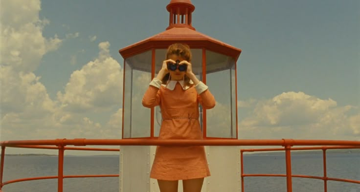
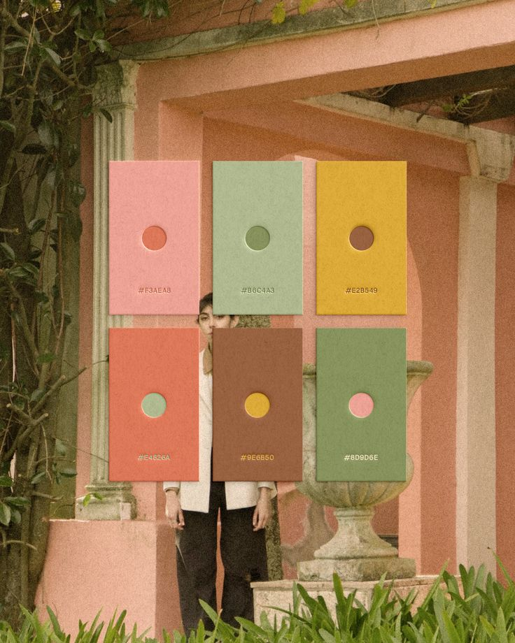
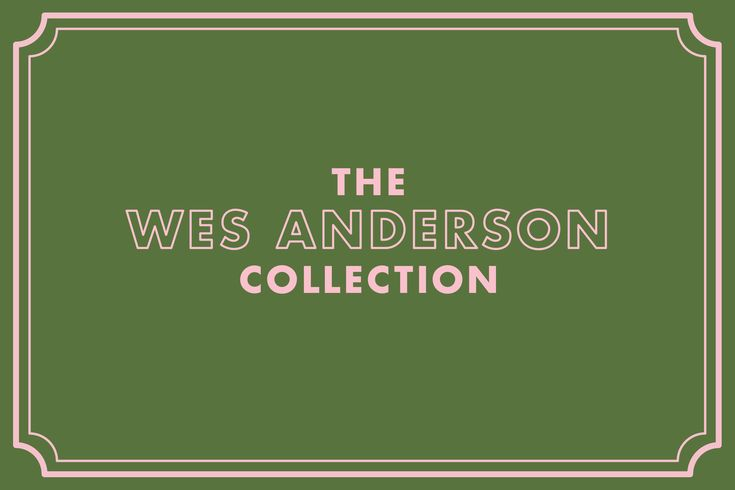
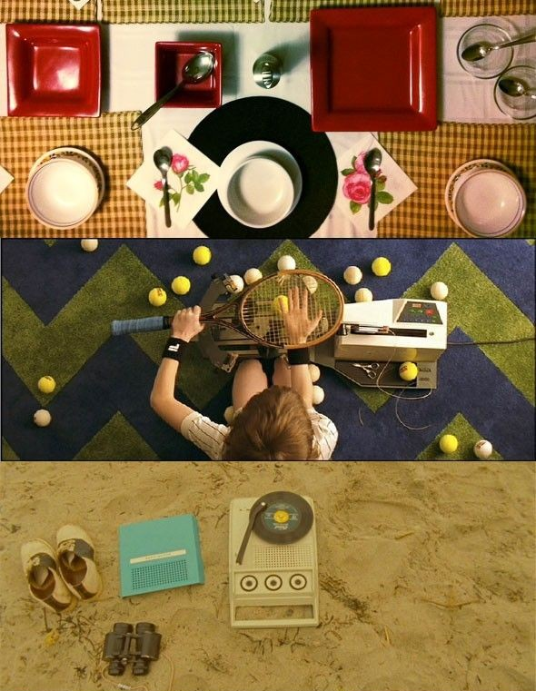

Wes Anderson
"Quiero tratar de crear un mundo en el que mis personajes puedan vivir."
La Directiva del Diorama
Para Anderson, el espacio no es un lugar real, es una maqueta controlada. Sus atmósferas no buscan el realismo, sino una artificialidad honesta.
Cada habitación es un proscenio teatral donde los objetos están curados obsesivamente para contar la historia emocional de quien los habita.
Inventario de Obsesiones
Los pilares estéticos que construyen su universo visual

Simetría Axial
El centro de la imagen es la ley. Un punto de fuga único que transforma el caos en una maqueta perfecta.

Paletas Pastel
Tonos saturados que envuelven la melancolía en papel de regalo. El color no es decoración, es el tono emocional de la historia.

Grafismo y Control de Arte
Obsesión por la tipografía Futura y la selección meticulosa de mobiliario y vestuario para crear mundos altamente estilizados.

Vista de Pájaro e Inventario
Planos cenitales a 90° para catalogar objetos y partituras sonoras retro de los 60/70 que ordenan la existencia de sus personajes.
Stop Motion, Slow Motion & Travellings
Técnicas manuales y desplazamientos horizontales que resaltan el detalle maquetado, creando una sensación de contemplación visual única.
Familias Disfuncionales y Actores Fetiche
Personajes excéntricos interpretados por un elenco recurrente (Murray, Wilson, Swinton) que afrontan la tragedia con torpeza y humor patético.
Roba la Paleta
Haz clic en una tira de color para copiar su código HEX y pintar la escena.